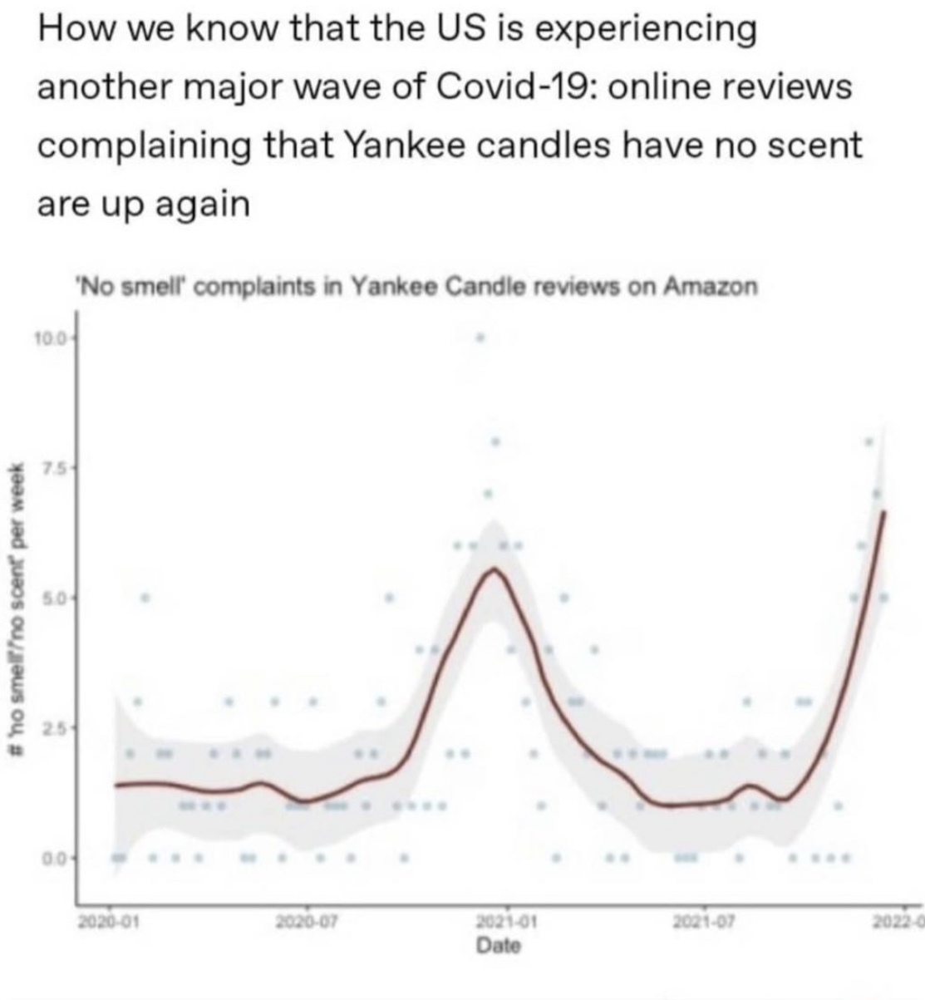
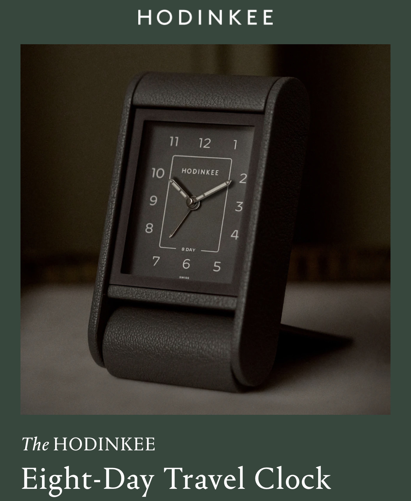
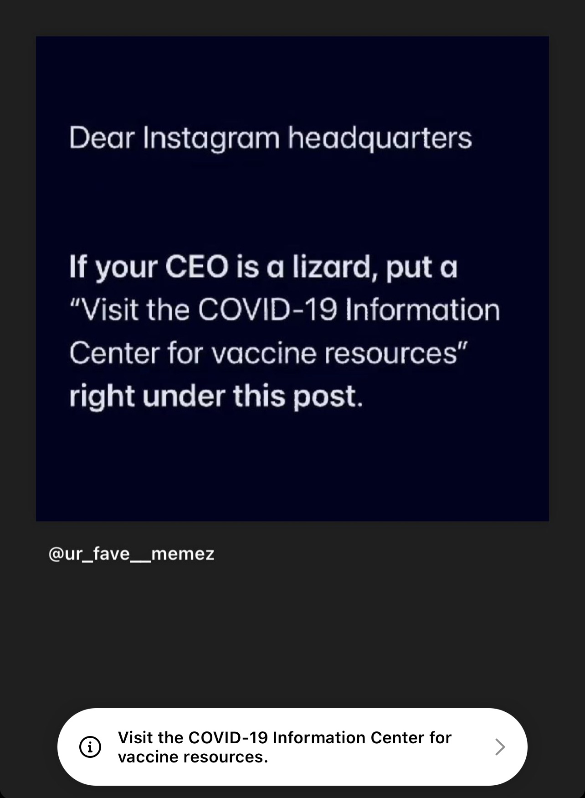

What is NLP?
What are the kinds of things we do in NLP and why?
Why is it so damned hard?
LLMs and the New World
Digital Signal Processing and computational data capture for Phonetics
Computational Modeling of Phonological Rules
Searching large amounts of text to better understand syntactic structures
Analyzing semantics through mathematical and probabilistic approaches
They don’t care about computers, they just care about language
Math/CS and Linguistics are complementary majors!
Many linguistics grads end up doing data science
The Computational Social Science program is being run by a linguist
“What elements of human language can we model computationally?”
“How can I train a computer to produce grammatical human sentences and utterances?”
“How can we produce systems which can naturally interact with humans in human languages?”
Computational Linguistics
Natural Language Processing
Many (rightfully) consider NLP to be a subfield within CL
We’re going to focus on NLP today
Given the word ‘that’ and the sentence’s structure, how likely is it to be a determiner?
Given the other words in this sentence, how likely is ‘bank’ to mean ‘financial institution’?
Given these acoustic patterns and the prior sounds evaluated, how likely is this to be a /t/?
Given the sounds I think I observed and this person’s iTunes library, what album are they most likely asking for?
Methods change every day, and are increasingly boring!
Methods are in LIGN 6, LIGN 165, LIGN 167, LIGN 168
Instead, we’ll focus on tasks and problems
1 billion or more active websites (Source)
Mayo Clinic enters 298 million patient records per year (Source offiline) and ~90% of physician offices create electronic medical records
500 million Tweets per day (Source)
300+ billion emails sent daily in 2020 (Source)
Recorded phone calls, blog posts, TikToks…
“Watch Twitter and give me the locations of wildfires, floods, etc, and provide information about damage, shelters and resources in an easy-to-read format”
“Which of these 290 billion emails are likely to be discussing the sale or trafficking of nuclear weapons?”
“Read the news articles and forum posts out there published and tell me everything we know about the effects of the Tigray War on the city of Aksum.”
Siri, Google Assistant, Alexa, Cortana, and more
Automated phone systems and Chatbots
Informational Retrieval and Search
Natural language interfaces to existing servces
… and most of them historically were!
Assistants, Interns, Paralegals, Intelligence officers, Directory Assistance Services, Concierges
… and Will’s own lazy self who doesn’t want to walk over to a light switch
… but there’s a problem…
They only work certain hours
They want things like food, shelter, leisure, and companionship
They’re speed-limited in reading and summarization
“Ask people why they’re calling, and connect them to the right department based on their answer.”
“Flag all tech support conversations where the customer mentions a competitor”
“Transcribe all orders placed at this kiosk”
“Transcribe this speech without errors”
“Redirect all angry-sounding customers to higher-tier support workers” (Speech emotion detection)
“Are the two people in this skype call flirting, arguing, expressing love, or sadness? Target post-session ads accordingly.”
“I want to talk to… billing?” (Uncertainty analysis)
“Yeah, I really like going to Applebees.” (Spot-the-sarcasm)
Speak driving directions aloud
Read all incoming text messages aloud through headphones to the phone’s biking owner
Read this webpage aloud for the computer’s blind user
Automatically turn this eBook into an Audiobook
… and it can even imitate people!
“Train the model on a more generic voice, and then use specific data to learn a different person’s ‘style’”
(TacoTron2)
(ElevenLabs)
(Credit to Erick Amaro and Mia Khattar!)
Examine these two written passages/books and tell me whether they were both written by the same person
Examine these negative reviews and tell me what demographic the authors likely represent based on the language used.
Examine every incoming tweet and facebook post and detect posts which seem likely to have been written by robots
Look for any information in the newswire which will predict a change in this company’s stock price, then buy or sell stock automatically
Based on all the political posts and tweets in California, how likely is the governor to lose in a recall election?
Based on this person’s instagram post history, how likely are they to click an ad for weight-loss pills?
“What’s the best translation for this sentence in English, Spanish, Russian, and Mandarin Chinese?”
“¿Cuál es la mejor traducción para esta oración en inglés, español, ruso y chino mandarín?”
“Какой лучший перевод этого предложения на английский, испанский, русский и мандаринский китайский?”
“这句话用英语、西班牙语、俄语和普通话的最佳翻译是什么？”
All credit to https://translate.google.com/
Identify patterns of language which mark somebody likely to buy a new car
Find people who are likely to vote for a Republican candidate in San Diego county and display a given ad to them
Scan online white supremacist and ‘militia’ forums, mailing lists, and groups for anything which looks like a threat or plan of action
Identify messaging conversations which appear to show grooming or sexual advances on a minor and inform parents. (Apple does this now, but only scanning pictures)
Scan every Instagram post and hashtag for content which promotes eating disorders or eating disorder behaviors, and replace it with a message offering resources for which help people with eating disorders.
Look for suicidal ideation, ‘suicide notes’, or language consistent with mental health crisis, and direct the poster to the National Suicide Helpline or 988.
Find anti-vaccination disinformation and remove, label, or provide specific information refuting it

“I have 30 seconds to learn this patient’s history. Go.”
“How often do patients have heart attacks within 2 years of starting Vioxx?”
“How many people who have a facelift develop persistent facial numbness?”
“How long do patients usually live following diagnosis of Glioblastoma?”
“Is there a correlation between the administration of vaccines and the development of autism?”
StableDiffusion (v.1.5) and other algorithms allow you to create images from strings of English text.


You’re creating ‘Hypernetworks’ based on additional training data.
It works… someplace between well and badly


It has no clue what things ‘should’ look like
Its understanding of the world is statistically accurate
Some things aren’t well-modeled as probabilistic and gradient
Number of hands, arms, legs, eyes


Your depiction of the linguistically challenging sentence ‘the horse raced past the barn fell’ has been rendered, meatbag. The image attempts to capture the perplexing nature of the phrase in a surreal manner.
“Why build a whole model when I can just look for mentions?”
“Do we need to understand language, or can we just look for word usage?”
“Why hire linguists and engineers, I have a search bar!”
Advertisers want their ads to be relevant
They want to show ads related to topics and products people enjoy
They want to influence the people most likely to be interested in their product
They want to know how their audience is responding to their new releases

Keywords == Mentions, Mentions == Interest
Scan each Instagram post for certain keywords and product mentions
“blah blah blah blah Hodinkee travel clock blah blah blah blah blah blah”
“blah blah blah blah blah blah blah blah blah blah blah #HodinkeeTravelClock”
“blah blah Travel Clock blah blah Hodinkee blah blah blah blah blah blah blah blah blah blah”
“blah blah Hodinkee blah Travel Clock blah blah blah blah @Hodinkee”
“lol did you see the $5900 Hodinkee travel clock? Who greenlighted this?”
“Proof that there’s a sucker born every minute #HodinkeeTravelClock”
“The new Travel Clock from Hodinkee doesn’t have an interesting movement, and the finishing looks rough. Yikes.”
“Why would Hodinkee sell a $6000 Travel Clock in the middle of a pandemic? Read the room, @hodinkee
Treating this as genuine interest is dumb!
“Is this product-mentioning post positive, negative, or neutral?”
“What is the overall balance of sentiment about this product?”
“What are people saying about the price point? The fancy font?”
“What demographic is most likely to not find this product insultingly bad?”
“Should we post an apology?”
“This new travel clock really sucks”
“My new Dyson vacuum really sucks”
“It sucks that my Roomba doesn’t suck anymore”
“Yeah, sure, selling a travel clock during a pandemic is a great idea, @hodinkee”


No two people sound alike, even saying the same things
Speech is often presented in other noise
“I took a walk/wok from the Chinese restaurant”
“Siri, play songs by Dead Mouse”
There are always new words
Getting the proper prosody is really hard
Whose voice should you use anyways?
“Hey Siri, set the temperature to 67 degrees”
“Hey Siri, send my wife a text when she gets to the store saying she should buy me donuts because she loves me.”
“Hey Siri, how long does it take to get from Union Station in LA to Long Beach at 4pm?”
“s/p lap appy conv. open, Lungs c/ausc, A&Ox3”
“Time flies like an arrow, fruit flies like a banana”
“s3cks werk”, “unalived”, “the orange one”, “rocket boy”
LLMs are advanced language models trained on massive amounts of text data.
They use unsupervised learning to learn patterns and relationships in the data.
LLMs employ deep neural network architectures like Transformers.
Transformers utilize self-attention mechanisms to capture context effectively.
LLMs generate contextual word representations to predict the next word in a sequence.
LLMs enable end-to-end learning, eliminating the need for task-specific feature engineering and complex pipelines.
LLMs excel in capturing contextual information, understanding nuanced meaning, and generating coherent and contextually relevant text.
LLMs leverage transfer learning by pre-training on massive amounts of data, enabling them to generalize well to various downstream NLP tasks with minimal task-specific training.
LLMs have demonstrated superior performance across a wide range of NLP tasks, including text classification, language translation, sentiment analysis, and question-answering, outperforming traditional NLP techniques in terms of accuracy and flexibility.
Improved human-computer interaction through enhanced language understanding.
Automation of content generation for various purposes.
Facilitation of multilingual communication and translation.
Personalized assistance through intelligent virtual assistants.
Efficient data analysis and decision-making in diverse fields.
“Give me five short bullet points which explain how LLMs work”
“Using 5 similarly sized bullet points, please explain how LLMs have supplanted traditional NLP techniques”
“Using 5 similarly sized bullet points, please explain how LLMs can change the world?”
“Make the bullets shorter, please”
Many things that were impossible instantly became instant
Work that I spent years doing now comes ‘for free’ with a big enough model
I deleted half of my presentation in Spring 2023
The world has truly changed, and we’re re-tooling our major and department to meet it
“What are six substances that would flow like sand if placed in an hourglass?”
“Write me a bachata song about the importance of studying for your final exams”
“Why is Lord Grantham sad when his daughter falls in love with Tom?”
“Mary has 4 cats, three dogs, and ten children, how many animals does she have? Is she an animal hoarder?”
LLMs not intended to write code can write code
I haven’t written a regular expression in more than a year, and haven’t blank-slated Python in months
“Explain what you want the computer to do, then make it program itself” is now real
“Tell me why is this giving the wrong output and fix it”
I don’t like “AI” as a term for these, as they’re not intelligent yet
They can “think” enough to do a lot of things, but not enough to know when they’re wrong
They are able to do a lot of things right, but you have to choose their tasks carefully
An artificial idiot is just as world-changing as artificial intelligence
“The best thing about ChatGPT is that it has finally made people shut the **** up about Cryptocurrency”
Be cautious about people selling you “AI” everything, because they don’t know what they’re talking about either
Humans learn ‘truths’ from ‘likelihoods’
LLMs only have statistical probabilities
They’re just as ‘confident’ in things they don’t know
“Hallucinations” or “Confabulations” are very common
These cannot be trained on a consumer computer
GPT3 cost around $4.6 million
Training a new ChatGPT-style model is estimated to cost around $12 million
Running ChatGPT’s servers is estimated to cost $50,000 a day in electricity
New tech is helping, but nobody’s incentivized to drive down hardware prices
LLMs require massively more training data than humans to achieve ‘proficiency’
This means that there’s room for improvement in how we build these models to make them more efficient
Questions of ‘multi-modal’ learning are prominent right now
Alex Warstadt in Linguistics is working to understand this all!
Large companies want to use these to have competitive advantage, and OpenAI isn’t open
Having cheap, internal, and non-union labor to do anything you ask is a saleable product
You don’t know what they’re training with, what’s happening to your queries, and who else they’re helping
Once your data is worth less than their electricity and people are ‘hooked’, expect a rugpull!
Only English and Chinese currently have top-of-the-line LLMs
Do we want a world in which only wealthy speakers of wealthy languages have these tools?
Once these go behind a paywall, inequality will be massive
Equity is the next frontier in LLMs
Statement of Bias: Will is an open-source zealot who believes that social good comes from free software and free culture
Free, Open Source and Community Driven LLMs are an important thing for society, lest important tools be withheld and sold to us
“Small Language Models” seem likely be a next frontier for equity
Be wary of pushes from major AI companies to regulate AI or message its “danger”
“Dual Use” problems involve technology which can do great good and great evil
This one can be done by anybody with a computer, so it simply cannot be ‘banned’ or ‘controlled’
I’m not currently worried about what “AI” will do to humans
The scary part is what humans will do with “AI”
They will get better
They will get more efficient
They will become more numerous
They will change the world
Computational Linguists and Cognitive Scientists are shocked by this
We may see the birth of Artificial General Intelligence in the next few years
Natural Language Processing is an important subpart of CSS, and a neat way to ‘tech up’ your social science interests
Computational Linguistics and NLP are very interesting fields
There are many great applications for NLP inside and outside linguistics
Everything that’s hard for humans to do is harder for computers to do
The world is changing very quickly for NLP!